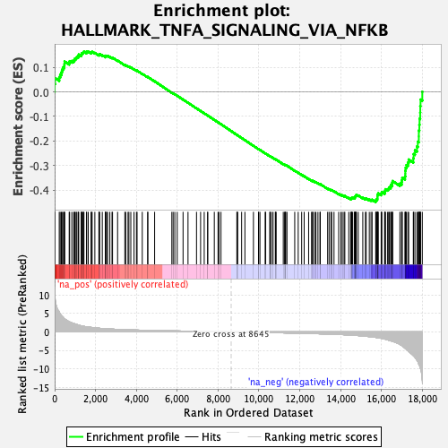
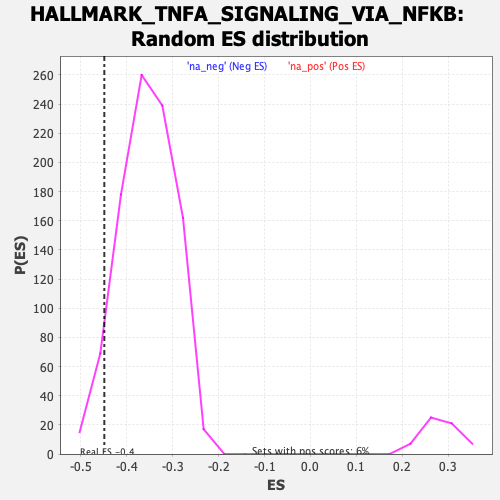

| | | Dataset | DE_genes2 |
| Phenotype | NoPhenotypeAvailable |
| Upregulated in class | na_neg |
| GeneSet | HALLMARK_TNFA_SIGNALING_VIA_NFKB |
| Enrichment Score (ES) | -0.44901747 |
| Normalized Enrichment Score (NES) | -1.262612 |
| Nominal p-value | 0.060638297 |
| FDR q-value | 0.22846882 |
| FWER p-Value | 0.983 |
Table: GSEA Results Summary

Fig 1: Enrichment plot: HALLMARK_TNFA_SIGNALING_VIA_NFKB
Profile of the Running ES Score & Positions of GeneSet Members on the Rank Ordered List
| SYMBOL | RANK IN GENE LIST | RANK METRIC SCORE | RUNNING ES | CORE ENRICHMENT | | 1 | IL18 | 2 | 11.769 | 0.0324 | No |
| 2 | ACKR3 | 22 | 9.086 | 0.0564 | No |
| 3 | TNFSF9 | 224 | 5.374 | 0.0600 | No |
| 4 | F3 | 272 | 4.873 | 0.0708 | No |
| 5 | OLR1 | 329 | 4.437 | 0.0799 | No |
| 6 | ATF3 | 359 | 4.310 | 0.0902 | No |
| 7 | HBEGF | 403 | 4.055 | 0.0990 | No |
| 8 | EDN1 | 464 | 3.603 | 0.1056 | No |
| 9 | EFNA1 | 479 | 3.544 | 0.1146 | No |
| 10 | DUSP1 | 488 | 3.510 | 0.1238 | No |
| 11 | FOSB | 712 | 2.744 | 0.1189 | No |
| 12 | AREG | 733 | 2.703 | 0.1252 | No |
| 13 | FOS | 841 | 2.431 | 0.1259 | No |
| 14 | TNF | 931 | 2.265 | 0.1272 | No |
| 15 | ICAM1 | 969 | 2.200 | 0.1312 | No |
| 16 | MAP3K8 | 991 | 2.157 | 0.1360 | No |
| 17 | LDLR | 1048 | 2.059 | 0.1385 | No |
| 18 | KLF4 | 1085 | 1.986 | 0.1420 | No |
| 19 | ZFP36 | 1153 | 1.857 | 0.1434 | No |
| 20 | RHOB | 1159 | 1.847 | 0.1482 | No |
| 21 | KLF2 | 1180 | 1.819 | 0.1521 | No |
| 22 | RCAN1 | 1300 | 1.663 | 0.1500 | No |
| 23 | CCN1 | 1311 | 1.651 | 0.1540 | No |
| 24 | NR4A1 | 1328 | 1.627 | 0.1576 | No |
| 25 | SLC2A6 | 1376 | 1.555 | 0.1593 | No |
| 26 | SOCS3 | 1405 | 1.509 | 0.1619 | No |
| 27 | SDC4 | 1435 | 1.480 | 0.1643 | No |
| 28 | EHD1 | 1563 | 1.377 | 0.1610 | No |
| 29 | PHLDA2 | 1564 | 1.377 | 0.1648 | No |
| 30 | SERPINE1 | 1644 | 1.317 | 0.1640 | No |
| 31 | TNIP1 | 1782 | 1.220 | 0.1597 | No |
| 32 | DNAJB4 | 1804 | 1.207 | 0.1618 | No |
| 33 | IL7R | 1836 | 1.180 | 0.1634 | No |
| 34 | PPP1R15A | 1969 | 1.092 | 0.1590 | No |
| 35 | CDKN1A | 2165 | 0.995 | 0.1508 | No |
| 36 | BTG2 | 2187 | 0.983 | 0.1523 | No |
| 37 | CCL5 | 2201 | 0.975 | 0.1543 | No |
| 38 | IL6 | 2333 | 0.914 | 0.1495 | No |
| 39 | GPR183 | 2484 | 0.857 | 0.1434 | No |
| 40 | SERPINB8 | 2488 | 0.857 | 0.1456 | No |
| 41 | NFKBIA | 2499 | 0.854 | 0.1474 | No |
| 42 | GADD45B | 2545 | 0.839 | 0.1472 | No |
| 43 | MAP2K3 | 2593 | 0.821 | 0.1468 | No |
| 44 | LIF | 2703 | 0.786 | 0.1429 | No |
| 45 | DRAM1 | 2810 | 0.753 | 0.1390 | No |
| 46 | TNFAIP2 | 2835 | 0.746 | 0.1397 | No |
| 47 | IL6ST | 3082 | 0.679 | 0.1278 | No |
| 48 | MYC | 3437 | 0.600 | 0.1096 | No |
| 49 | TNFRSF9 | 3481 | 0.592 | 0.1088 | No |
| 50 | SLC2A3 | 3594 | 0.571 | 0.1041 | No |
| 51 | DUSP5 | 3637 | 0.563 | 0.1033 | No |
| 52 | TNIP2 | 3730 | 0.543 | 0.0996 | No |
| 53 | PANX1 | 3887 | 0.515 | 0.0923 | No |
| 54 | CFLAR | 4006 | 0.496 | 0.0871 | No |
| 55 | BIRC3 | 4037 | 0.491 | 0.0867 | No |
| 56 | NFIL3 | 4291 | 0.454 | 0.0738 | No |
| 57 | YRDC | 4558 | 0.412 | 0.0600 | No |
| 58 | LITAF | 4562 | 0.412 | 0.0610 | No |
| 59 | FOSL1 | 4896 | 0.368 | 0.0433 | No |
| 60 | TAP1 | 5739 | 0.275 | -0.0032 | No |
| 61 | TLR2 | 5802 | 0.268 | -0.0059 | No |
| 62 | JAG1 | 5885 | 0.260 | -0.0098 | No |
| 63 | TNFAIP3 | 6003 | 0.249 | -0.0157 | No |
| 64 | ZC3H12A | 6289 | 0.223 | -0.0310 | No |
| 65 | RIPK2 | 6531 | 0.199 | -0.0440 | No |
| 66 | CSF2 | 6948 | 0.160 | -0.0669 | No |
| 67 | IL15RA | 7148 | 0.143 | -0.0777 | No |
| 68 | GADD45A | 7325 | 0.126 | -0.0872 | No |
| 69 | SMAD3 | 7492 | 0.111 | -0.0962 | No |
| 70 | IFNGR2 | 7497 | 0.111 | -0.0961 | No |
| 71 | NFAT5 | 7819 | 0.077 | -0.1139 | No |
| 72 | SGK1 | 8001 | 0.060 | -0.1239 | No |
| 73 | ETS2 | 8048 | 0.056 | -0.1263 | No |
| 74 | NR4A2 | 8146 | 0.046 | -0.1317 | No |
| 75 | IER5 | 8923 | -0.026 | -0.1751 | No |
| 76 | RELA | 8947 | -0.029 | -0.1763 | No |
| 77 | B4GALT5 | 8960 | -0.030 | -0.1769 | No |
| 78 | IFIT2 | 9157 | -0.047 | -0.1878 | No |
| 79 | FUT4 | 9318 | -0.062 | -0.1966 | No |
| 80 | IER3 | 9736 | -0.103 | -0.2197 | No |
| 81 | DENND5A | 9983 | -0.127 | -0.2332 | No |
| 82 | PLK2 | 9993 | -0.129 | -0.2333 | No |
| 83 | BTG3 | 10055 | -0.135 | -0.2364 | No |
| 84 | NFKB2 | 10309 | -0.161 | -0.2501 | No |
| 85 | TRIP10 | 10336 | -0.164 | -0.2511 | No |
| 86 | NINJ1 | 10538 | -0.184 | -0.2619 | No |
| 87 | IFIH1 | 10548 | -0.185 | -0.2619 | No |
| 88 | TIPARP | 10618 | -0.191 | -0.2652 | No |
| 89 | IER2 | 10697 | -0.201 | -0.2691 | No |
| 90 | RNF19B | 10810 | -0.212 | -0.2747 | No |
| 91 | NFKB1 | 10814 | -0.213 | -0.2743 | No |
| 92 | TUBB2A | 10850 | -0.217 | -0.2757 | No |
| 93 | SQSTM1 | 11197 | -0.260 | -0.2944 | No |
| 94 | TANK | 11264 | -0.268 | -0.2974 | No |
| 95 | FOSL2 | 11280 | -0.270 | -0.2974 | No |
| 96 | KLF6 | 11309 | -0.276 | -0.2983 | No |
| 97 | FJX1 | 11312 | -0.277 | -0.2976 | No |
| 98 | EIF1 | 11378 | -0.286 | -0.3005 | No |
| 99 | B4GALT1 | 11758 | -0.329 | -0.3208 | No |
| 100 | BIRC2 | 11928 | -0.351 | -0.3293 | No |
| 101 | BHLHE40 | 12098 | -0.375 | -0.3378 | No |
| 102 | PER1 | 12220 | -0.391 | -0.3435 | No |
| 103 | NFKBIE | 12439 | -0.426 | -0.3545 | No |
| 104 | ZBTB10 | 12582 | -0.445 | -0.3613 | No |
| 105 | MCL1 | 12631 | -0.452 | -0.3627 | No |
| 106 | TRAF1 | 12646 | -0.455 | -0.3623 | No |
| 107 | MXD1 | 12737 | -0.470 | -0.3660 | No |
| 108 | STAT5A | 12797 | -0.479 | -0.3680 | No |
| 109 | CCNL1 | 12896 | -0.495 | -0.3721 | No |
| 110 | JUNB | 12993 | -0.514 | -0.3761 | No |
| 111 | SAT1 | 13011 | -0.516 | -0.3756 | No |
| 112 | PLEK | 13370 | -0.584 | -0.3941 | No |
| 113 | SOD2 | 13441 | -0.599 | -0.3964 | No |
| 114 | DDX58 | 13529 | -0.612 | -0.3996 | No |
| 115 | NFE2L2 | 13569 | -0.622 | -0.4000 | No |
| 116 | NR4A3 | 13682 | -0.642 | -0.4045 | No |
| 117 | SNN | 13912 | -0.696 | -0.4155 | No |
| 118 | SIK1 | 14021 | -0.720 | -0.4195 | No |
| 119 | TRIB1 | 14090 | -0.738 | -0.4213 | No |
| 120 | REL | 14174 | -0.758 | -0.4239 | No |
| 121 | PTPRE | 14212 | -0.770 | -0.4238 | No |
| 122 | CEBPD | 14404 | -0.831 | -0.4322 | No |
| 123 | EGR1 | 14497 | -0.864 | -0.4350 | No |
| 124 | GCH1 | 14526 | -0.875 | -0.4342 | No |
| 125 | TGIF1 | 14548 | -0.882 | -0.4329 | No |
| 126 | JUN | 14553 | -0.885 | -0.4307 | No |
| 127 | ATP2B1 | 14588 | -0.900 | -0.4301 | No |
| 128 | CSF1 | 14672 | -0.925 | -0.4322 | No |
| 129 | NAMPT | 14701 | -0.936 | -0.4312 | No |
| 130 | PNRC1 | 14703 | -0.937 | -0.4287 | No |
| 131 | MAFF | 14706 | -0.939 | -0.4262 | No |
| 132 | CEBPB | 14733 | -0.947 | -0.4250 | No |
| 133 | PDLIM5 | 14744 | -0.951 | -0.4230 | No |
| 134 | CCND1 | 14756 | -0.955 | -0.4210 | No |
| 135 | CLCF1 | 14779 | -0.961 | -0.4195 | No |
| 136 | KDM6B | 14869 | -0.991 | -0.4218 | No |
| 137 | PTX3 | 15092 | -1.091 | -0.4312 | No |
| 138 | TNFAIP8 | 15220 | -1.160 | -0.4352 | No |
| 139 | PLAUR | 15258 | -1.184 | -0.4340 | No |
| 140 | GEM | 15410 | -1.272 | -0.4389 | No |
| 141 | KLF10 | 15493 | -1.315 | -0.4399 | No |
| 142 | IRF1 | 15548 | -1.346 | -0.4392 | No |
| 143 | MARCKS | 15724 | -1.475 | -0.4449 | Yes |
| 144 | PLAU | 15741 | -1.493 | -0.4417 | Yes |
| 145 | TSC22D1 | 15753 | -1.499 | -0.4382 | Yes |
| 146 | BTG1 | 15799 | -1.545 | -0.4365 | Yes |
| 147 | PMEPA1 | 15805 | -1.550 | -0.4325 | Yes |
| 148 | CXCL2 | 15807 | -1.552 | -0.4282 | Yes |
| 149 | ABCA1 | 15808 | -1.552 | -0.4239 | Yes |
| 150 | BCL6 | 15813 | -1.555 | -0.4199 | Yes |
| 151 | LAMB3 | 15828 | -1.568 | -0.4163 | Yes |
| 152 | ID2 | 15850 | -1.589 | -0.4131 | Yes |
| 153 | VEGFA | 15991 | -1.729 | -0.4162 | Yes |
| 154 | IRS2 | 16006 | -1.744 | -0.4122 | Yes |
| 155 | CD44 | 16023 | -1.772 | -0.4082 | Yes |
| 156 | KLF9 | 16163 | -1.908 | -0.4107 | Yes |
| 157 | SPSB1 | 16168 | -1.915 | -0.4056 | Yes |
| 158 | CD83 | 16189 | -1.959 | -0.4013 | Yes |
| 159 | RELB | 16198 | -1.972 | -0.3963 | Yes |
| 160 | PFKFB3 | 16307 | -2.155 | -0.3964 | Yes |
| 161 | CD69 | 16359 | -2.232 | -0.3931 | Yes |
| 162 | BCL3 | 16387 | -2.280 | -0.3884 | Yes |
| 163 | PHLDA1 | 16462 | -2.404 | -0.3859 | Yes |
| 164 | PDE4B | 16466 | -2.410 | -0.3794 | Yes |
| 165 | DUSP2 | 16535 | -2.518 | -0.3762 | Yes |
| 166 | SPHK1 | 16536 | -2.519 | -0.3693 | Yes |
| 167 | INHBA | 16551 | -2.543 | -0.3631 | Yes |
| 168 | HES1 | 16908 | -3.385 | -0.3737 | Yes |
| 169 | PLPP3 | 16992 | -3.664 | -0.3682 | Yes |
| 170 | ICOSLG | 17002 | -3.707 | -0.3585 | Yes |
| 171 | G0S2 | 17026 | -3.805 | -0.3493 | Yes |
| 172 | F2RL1 | 17159 | -4.373 | -0.3446 | Yes |
| 173 | MSC | 17174 | -4.444 | -0.3331 | Yes |
| 174 | CCL2 | 17175 | -4.446 | -0.3208 | Yes |
| 175 | BCL2A1 | 17188 | -4.528 | -0.3090 | Yes |
| 176 | IL1B | 17227 | -4.727 | -0.2981 | Yes |
| 177 | IL1A | 17300 | -5.079 | -0.2881 | Yes |
| 178 | CXCL3 | 17339 | -5.337 | -0.2755 | Yes |
| 179 | CXCL1 | 17566 | -6.391 | -0.2705 | Yes |
| 180 | GFPT2 | 17581 | -6.472 | -0.2534 | Yes |
| 181 | PTGER4 | 17645 | -6.839 | -0.2381 | Yes |
| 182 | EGR2 | 17743 | -7.630 | -0.2224 | Yes |
| 183 | SLC16A6 | 17785 | -8.009 | -0.2026 | Yes |
| 184 | TNFAIP6 | 17835 | -8.689 | -0.1814 | Yes |
| 185 | CXCL11 | 17836 | -8.698 | -0.1573 | Yes |
| 186 | KYNU | 17861 | -8.961 | -0.1339 | Yes |
| 187 | EGR3 | 17871 | -9.122 | -0.1092 | Yes |
| 188 | BMP2 | 17902 | -9.558 | -0.0845 | Yes |
| 189 | TNC | 17907 | -9.699 | -0.0580 | Yes |
| 190 | PTGS2 | 17920 | -9.939 | -0.0312 | Yes |
| 191 | DUSP4 | 18006 | -13.159 | 0.0004 | Yes |
Table: GSEA details [plain text format]

Fig 2: HALLMARK_TNFA_SIGNALING_VIA_NFKB: Random ES distribution
Gene set null distribution of ES for HALLMARK_TNFA_SIGNALING_VIA_NFKB